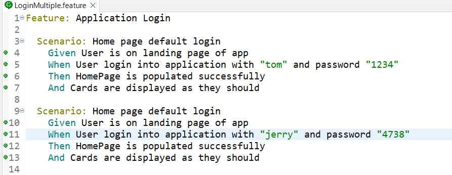
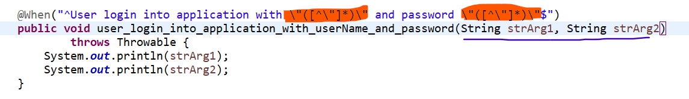
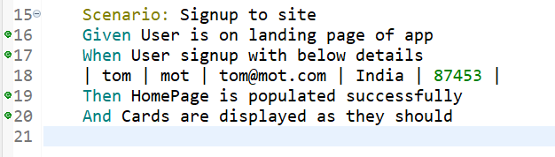
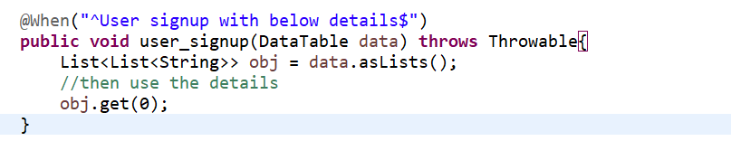
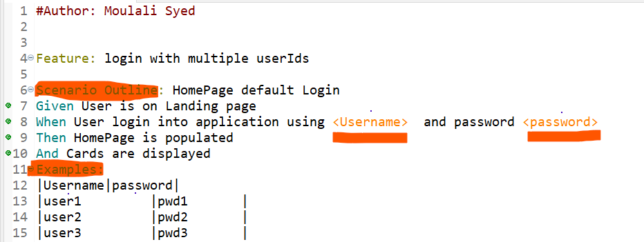
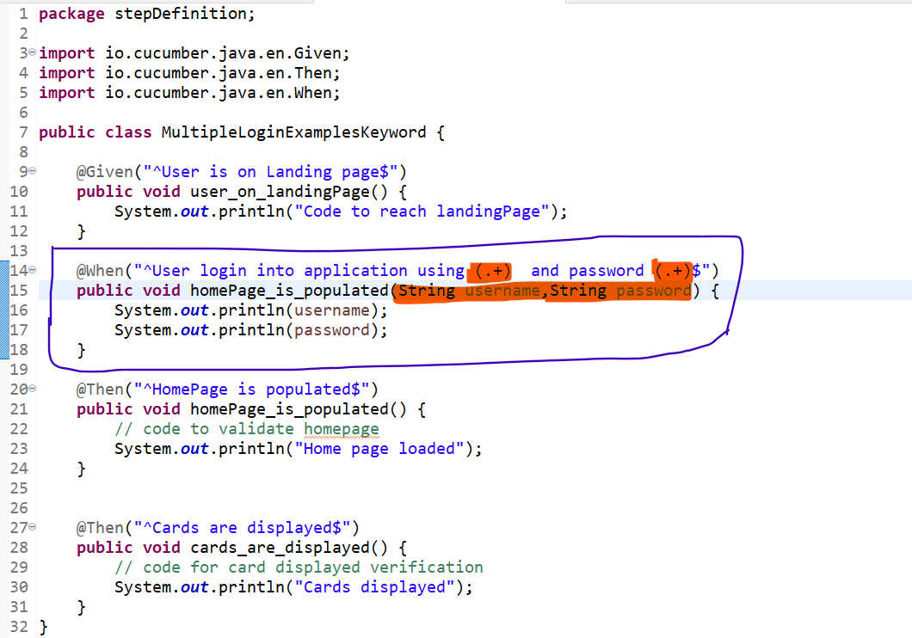

Importance of Regular Expressions
Suppose we want to login to an application with different user ids in different Scenario , then we can use regular expressions instead of creating seperate StepDefinition for each of login id
Below is a feature file with different userIds
Use regular expression in StepDefinition and pass them as parameter to the method
values passed from gherkin should match number of method arguments
Importance of Data Drive
If we have less parameters to be passed then we can use regex but if we have many parameters we can use DataTable
 Parameterizing test runs with Examples keyword
If we want to repeat single scenario multiple times with different data sets then use parameterization with Examples keyword and Scenario Outline
 